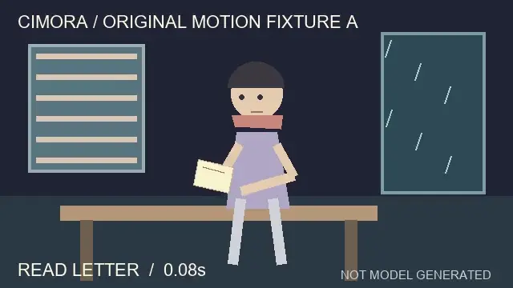
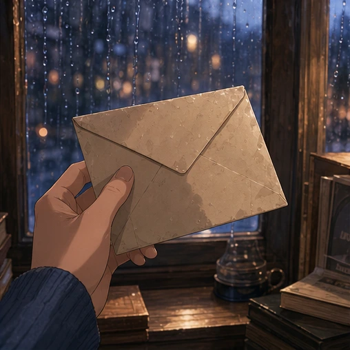

从图、角色、动态或声音开始。先完成眼前的小创作，需要时再保存成资产，继续用于漫画和视频。
从文字或参考图片开始绘图，继续对话修改并比较版本。
用自己的角色做静态或动态表情包，调整配字并扩展成套。
把人物介绍与视觉身份放在一起，一次整理三视图与头像，再按需换装。
沿用已有角色，补充表情与动作；也可以上传外部角色来体验。
从单图或首尾帧开始，描述动作和镜头，预览一个简短动态。

以已有视频的动作和镜头为基础，调整画风、人物或场景。
先听见角色：描述性格或情境，比较声音方向，再用选定音色配词。
为情境制作背景音乐、环境音或动作音效，试听比较后继续调整。

上传漫画，核对原文、修改译文，再把文字排回画面。
从草稿或线稿开始，清理线条、参考配色并对比处理结果。
分离人物或物件，通过对话修补边缘，保留透明素材。
从角色立绘出发，整理分层与绑定方案，并查看动作预览。
把角色整理成四状态透明素材，试演会说话的角色效果。
放大图片或减小文件，查看细节对比后再保存。